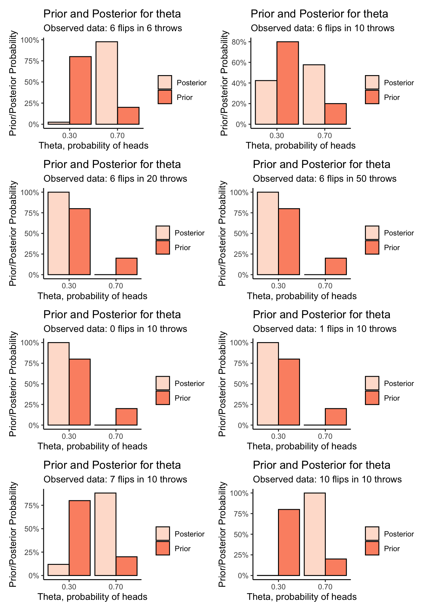

Chapter 6 Supplement to Evans & Rosenthal Section 7.1
This chapter is a supplement to Chapter 7: Bayesian Inference, section 1: The Prior and Posterior Distributions. This is to support the Bayesian Inference sections of STA238. Materials in this tutorial are taken from Alex’s comprehensive tutorial on Bayesian Inference, which is very long and outside the scope of this course.
6.1 Tutorial
In this example we will discuss at length the Beta-Bernoulli example from section 7.1. First follow along with the tutorial, then check out the interactive app.
Given data generated from some family of probability distributions indexed by unknown parameter, statistical inference is concerned with estimating these parameters- finding reasonable values for them, given the observed data. The central notion is that of uncertainty: we simply don’t know the values of the parameters that generated the data we observed, and we do know that several different values could reasonably have generated these data. Probability is the mathematical construct used to represent uncertainty.
6.1.1 Frequentist/Likelihood Perspective
Classically, the approach to this problem is taught from the frequentist perspective. Uncertainty in the values of the parameters that generated the data is represented by probability via the notion of repeated sampling: under the given probability model with the given parameter values, what is the relative frequency with which these same data would be observed, if the experiment that generated the data were repeated again and again? Values of the parameters that have a higher probability of having generated the observed data are thought to be more likely than other values.
As an example, consider a coin with unknown probability of heads \(\theta\). We toss the coin once, and observe random outcome (data) \(X = 1\) if the toss is heads and \(X = 0\) if not. For simplicity, suppose we know we have chosen one of two possible coins, either having \(\theta = 0.7\) or \(\theta = 0.3\). How do we use the observed data to infer which of these two coins we threw?
For any \(0 < \theta < 1\), the probability distribution of the single coin toss is given by \[ P(X = x) = \theta^{x}(1-\theta)^{1-x} \] This just says that \(P(X = 1) = \theta\) and \(P(X = 0) = 1-\theta\).
Let’s say we throw the coin once, and observe \(X = 1\). If \(\theta = 0.7\) the probabilty of observing this result is \(P(X = 1|\theta = 0.7) = 0.7\). That is if \(\theta = 0.7\), we would expect roughly \(70\%\) of repetitions of this experiment to yield the same results as we observed in our data. If \(\theta = 0.3\) on the other hand, \(P(X = 1|\theta = 0.3) = 0.3\); only \(30\%\) of the repetitions of this experiment would yield the observed data if \(\theta = 0.3\). Because \(\theta = 0.7\) would yield the observed data more frequently than \(\theta = 0.3\), we say that \(\theta = 0.7\) is more likely to have generated the observed data than \(\theta=0.3\), and our inference favours \(\theta =0.7\).
6.1.2 Bayesian Inference: introduction
One criticism of the above approach is that is depends not only on the observed data, but also on infinitely many other possible datasets that are not observed. This is an artifact of the manner in which probability is used to represent uncertainty. In contrast, Bayesian statistics represents uncertainty about the value of a parameter directly using probability distributions.
In particular, a prior distribution is placed on the parameter, representing the probable values of that parameter before data is observed. Having observed the data, the prior is updated via Bayes’ Rule, yielding the posterior distribution of the parameter, given the data.
The choice of prior distribution is based either on subject-matter knowledge or mathematical convenience, and is a subjective choice on the part of the analyst. Don’t worry too much about it in this course– you should get comfortable with the idea and the math. We’d talk more about it in a more advanced applied statistics course.
To see how this works, suppose that we think about \(4/5\) coins in our pocket are the \(\theta = 0.3\) coins, and only \(1/5\) are the \(\theta = 0.7\) coins. The parameter space here is \(\Theta = \left\{ 0.3, 0.7\right\}\). Our prior distribution on \(\theta\) is then \[ P(\theta = q) = 0.2^{I(q = 0.7)}0.8^{I(q = 0.3)}, \ q\in\Theta \] where \(I(q = 0.7) = 1\) if \(q = 0.7\) and \(0\) otherwise. This, like the probability distribution of the actual result of the coin toss, just encodes our notion that \(P(\theta = 0.3) = 0.8\) and \(P(\theta = 0.7) = 0.2\).
So without knowing the result of the coin toss, we think there is a \(20\%\) chance that \(\theta = 0.7\). We know from above that if we observe heads on the coin toss, we have observed a result that would occur about \(70\%\) of the time if \(\theta = 0.7\). In probability terms, we have a marginal distribution for \(\theta\), and a conditional distribution for \(X|\theta\).
These two ideas are combined by computing the conditional distribution of \(\theta|X\), known as the posterior distribution for \(\theta\) having observed \(X\). This is obtained (explaining the name) via Bayes’ Rule: \[ p(\theta|X) = \frac{p(X|\theta)\times p(\theta)}{p(X)} \] where the marginal distribution of \(X\), or the normalizing constant or marginal likelihood or model evidence (this thing has a lot of names) is given by \[ p(X) = \sum_{\theta\in\Theta}p(X|\theta)\times p(\theta) \] and ensures \(p(\theta|X)\) is a proper probability distribution.
Exercise: verify that \(p(\theta|X)\) is a valid probability density on \(\Theta\) by verifying that \(\sum_{\theta\in\Theta}p(\theta|X) = 1\).
In our example, the prior probability of \(\theta = 0.7\) is only \(20\%\). But we flip the coin and observe \(X = 1\). We can see how this observation updates our belief about the likely values of \(\theta\) by computing the posterior distribution of \(\theta\) given the observed data: \[ \begin{aligned} &p(\theta|X) = \frac{\theta^{x}(1-\theta)^{1-x}\times 0.2^{I(\theta = 0.7)}0.8^{I(\theta = 0.3)}}{\sum_{\theta = 0.3,0.7}\theta^{x}(1-\theta)^{1-x}\times 0.2^{I(\theta = 0.7)}0.8^{I(\theta = 0.3)}} \\ \implies& P(\theta = 0.7 | X = 1) = \frac{0.7 \times 0.2}{0.7\times0.2 + 0.3\times0.8} \\ &= 0.368 \end{aligned} \] Before observing heads, we would have thought the \(\theta = 0.7\) coin to be very unlikely, but because the observed data favours \(\theta = 0.7\) more strongly than \(\theta = 0.3\), after observing these data we feel that \(\theta = 0.7\) is more likely than before.
6.1.3 Flipping More Coins
Suppose now that we flip \(n\) coins, obtaining a dataset \(X = (X_{1},\ldots,X_{n})\) of heads or tails, represented by 0’s and 1’s. If we’re still considering only two candidate values \(\theta = 0.7\) or \(\theta = 0.3\), we may still ask the question “which value is more likely to have generated the observed data?”. We again form the likelihood function for each value of \(\theta\), the relative frequency with which each value of \(\theta\) would have generated the observed sample. Assuming the tosses are statistically independent: \[ p(X|\theta) = \theta^{\sum_{i=1}^{n}X_{i}} \times (1 - \theta)^{n - \sum_{i=1}^{n}X_{i}} \] where \(\sum_{i=1}^{n}X_{i}\) is just the number of heads observed in the sample. We see that any two samples that have the same number of heads will lead to the same inferences about \(\theta\) in this manner.
Suppose we throw the coin \(10\) times and observe \(6\) heads. The likelihood function for each candidate value of \(\theta\) is \[ \begin{aligned} p(X|\theta = 0.7) &= 0.7^{6} \times 0.3^{4} = 0.000953 \\ p(X|\theta = 0.3) &= 0.3^{6} \times 0.7^{4} = 0.000175 \\ \end{aligned} \] It is much more likely to observe \(6\) heads when \(\theta = 0.7\) than when \(\theta = 0.3\).
Exercise: calculate the likelihood function for \(\theta\) when \(n = 100\) and \(\sum_{i=1}^{n}X_{i} = 60\). How much more likely is \(\theta = 0.7\) than \(\theta = 0.3\) now?
In the Bayesian setting, with our prior distribution on \(\theta\) from above, we would form the posterior distribution as follows: \[ p(\theta|X) = \frac{\theta^{\sum_{i=1}^{n}x_{i}}(1-\theta)^{n - \sum_{i=1}^{n}x_{i}}\times 0.2^{I(\theta = 0.7)}0.8^{I(\theta = 0.3)}}{\sum_{\theta = 0.3,0.7}\theta^{\sum_{i=1}^{n}x_{i}}(1-\theta)^{n - \sum_{i=1}^{n}x_{i}}\times 0.2^{I(\theta = 0.7)}0.8^{I(\theta = 0.3)}} \] Computing this for our observed data of \(\sum_{i=1}^{10}x_{i} = 6\) yields \[ \begin{aligned} p(\theta = 0.7 |X) = \frac{0.7^{6}0.3^{4}\times 0.2}{0.7^{6}0.3^{4}\times 0.2 + 0.3^{6}0.7^4\times0.8} = 0.576 \\ p(\theta = 0.3 |X) = \frac{0.3^{6}0.7^{4}\times 0.2}{0.3^{6}0.7^{4}\times 0.8 + 0.7^{6}0.3^4\times0.2} = 0.424 \\ \end{aligned} \]
We can see that the data “updates” our prior belief that \(\theta = 0.3\) was more probable than \(\theta = 0.7\), because the observed data was more likely to have occurred if \(\theta = 0.7\) than if \(\theta = 0.3\).
6.1.4 Visualization
It is helpful to visualize the prior and posterior, for the observed data. Because both prior and posterior only allow two values, we can do this using a simple bar chart:
visualize_binomial_priorposterior <- function(sumx,n) {
prior <- function(theta) {
if (theta == .3) {
return(.8)
}
else if (theta == .7) {
return(.2)
}
0
}
likelihood <- function(theta) theta^sumx * (1-theta)^(n - sumx)
marginal_likelihood <- prior(.7) * likelihood(.7) + prior(.3) * likelihood(.3)
posterior <- function(theta) likelihood(theta) * prior(theta) / marginal_likelihood
# Plot of the prior and posterior distributions for these observed data
data_frame(
theta = c(.3,.7,.3,.7),
value = c(prior(.3),prior(.7),posterior(.3),posterior(.7)),
type = c("Prior","Prior","Posterior","Posterior")
) %>%
ggplot(aes(x = theta,y = value,fill = type)) +
theme_classic() +
geom_bar(stat = "identity",position = "dodge",colour = "black") +
labs(title = "Prior and Posterior for theta",
subtitle = str_c("Observed data: ",sumx," flips in ",n," throws"),
x = "Theta, probability of heads",
y = "Prior/Posterior Probability",
fill = "") +
scale_x_continuous(breaks = c(0.30,0.70),labels = c("0.30","0.70")) +
scale_y_continuous(labels = scales::percent_format()) +
scale_fill_brewer(palette = "Reds")
}Plotting is nice as it lets us compare how different observed data, and different experiments (number of throws) affect the prior/posterior balance of belief:
cowplot::plot_grid(
visualize_binomial_priorposterior(6,6),
visualize_binomial_priorposterior(6,10),
visualize_binomial_priorposterior(6,20),
visualize_binomial_priorposterior(6,50),
visualize_binomial_priorposterior(0,10),
visualize_binomial_priorposterior(1,10),
visualize_binomial_priorposterior(7,10),
visualize_binomial_priorposterior(10,10),
ncol=2
)
6.2 Interactive App
Go to the app: https://awstringer1.shinyapps.io/bayesian-tutorial/
The app lets you flip coins and estimate the probability of heads using Frequentist and Bayesian methods. We haven’t covered estimation yet, but we have covered the model for coin flipping in both contexts now, so you should be able to tell what’s happening. Also shown are interval estimates, which measure the strength of the conclusions about \(p\) that are made based on the data and model. Narrower interval estimates mean we’re more sure about the value of \(p\), after seeing the data.
The app lets you change the following:
- The number of times you flip the coin,
- The true probability of heads, \(p\),
- Your prior belief about the probability of heads, the “prior mean”, and
- The strength of your prior beliefs, as measured by the prior standard deviation. Lower standard deviation means you’re more sure about the value of \(p\), before seeing any flips.
You should answer the following questions:
How many flips do you need before the Bayesian and frequentist inferences agree closely? Does this depend on the true value of \(p\), your prior belief, and the strength of your prior belief?
Intuitively: why are the Bayesian interval estimates narrower than the frequentist ones? Is this always the case?
Can you “break” the Bayesian answer by expressing really strong and wrong prior beliefs? Can you “fix” it by flipping the coin more times?